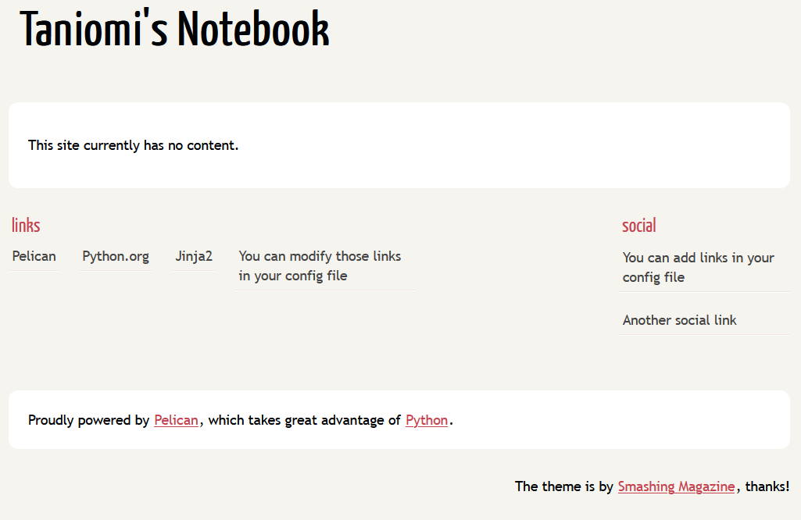
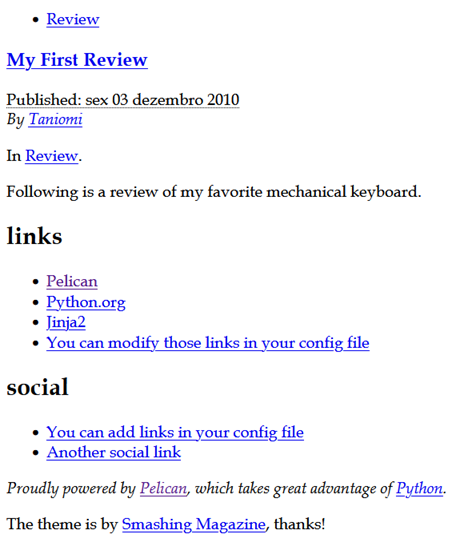

The inspiration for using Pelican was heavily drawn from Simulatine's 100 Days of Code Blog.
I followed the same steps as Simulatine, and found different challenges.
I'm using uv and Python 3.11.
Below are the steps I followed after failing to create a page for the first time.
I will relate the error I commited the first time later on so you don't have to go through the same.
Following the steps in the Quickstart Guide:
Steps
- Create a new directory for the project
$ mkdir ~/taniomis_repos/taniomis_notebook
$ cd ~/taniomis_repos/taniomis_notebook
- Initialize the project with
uv
$ uv init
$ uv add pelican[markdown]
- Quickstart Pelican
$ uv run pelican-quickstart
Welcome to pelican-quickstart v4.11.0.
This script will help you create a new Pelican-based website.
Please answer the following questions so this script can generate the files
needed by Pelican.
> Where do you want to create your new web site? [.]
> What will be the title of this web site? Taniomi's Notebook
> Who will be the author of this web site? Taniomi
> What will be the default language of this web site? [pt] en
> Do you want to specify a URL prefix? e.g., https://example.com (Y/n) y
> What is your URL prefix? (see above example; no trailing slash) https://taniomi.github.io/taniomis_notebook
> Do you want to enable article pagination? (Y/n)
> How many articles per page do you want? [10]
> What is your time zone? [Europe/Rome] America/Sao_Paulo
> Do you want to generate a tasks.py/Makefile to automate generation and publishing? (Y/n)
> Do you want to upload your website using FTP? (y/N)
> Do you want to upload your website using SSH? (y/N)
> Do you want to upload your website using Dropbox? (y/N)
> Do you want to upload your website using S3? (y/N)
> Do you want to upload your website using Rackspace Cloud Files? (y/N)
> Do you want to upload your website using GitHub Pages? (y/N) y
> Is this your personal page (username.github.io)? (y/N)
Done. Your new project is available at C:\Users\Milena\taniomis_repos\taniomis_notebook
At this point, I had a uv.lock, a pyproject.toml, a content folder, a Makefile and some python files (pelicanconf.py, publishconf.py, tasks.py).
- Generate the site and make sure to run it in the root directory.
The -o flag indicates the output directory, and the -s flag indicates the settings file.
$ uv run pelican content -o output -s pelicanconf.py
Done: Processed 0 articles, 0 drafts, 0 hidden articles, 0 pages, 0 hidden pages
and 0 draft pages in 0.13 seconds.
Everything ran smoothly and the output folder was created with HTML and CSS files.
- Open a new terminal to preview the site
From the root directory, I opened a new terminal window and launched Pelican's web server to preview the site:
$ uv run pelican --listen
Serving site at: http://127.0.0.1:8000 - Tap CTRL-C to stop
Opening the URL http://127.0.0.1:8000/ in my browser, I had a simple empty page, but everything was working fine!

Publishing to GitHub Pages
Now, it was time to publish the site to GitHub Pages.
I followed the instructions in the Pelican docs.
- Install
ghp-import:
- Add the
output directory to the gh-pages branch with ghp-import:
$ uv run ghp-import output -b gh-pages
- Create the repo in GitHub
I created the repo using gh repo create.
$ gh repo create
(...)
✓ Added remote git@github.com:taniomi/taniomis_notebook.git
$ git add .
$ git commit -m "chore: initial commit"
- Push the repo to GitHub
Pushing the gh-pages branch publishes the site.
$ git push origin main
$ git push origin gh-pages
Here's the error that I mentioned earlier!
My error was pushing the gh-pages branch before the main branch.
Pushing the gh-pages branch first makes it so that the CSS files can't be found.
Push the main branch first, then the gh-pages branch.
- See the page
I opened the URL https://taniomi.github.io/taniomis_notebook/ in my browser and saw the result!
Difficulties along the way
Just for the record, this is how your site will look like if you push the gh-pages branch first.

After some research, I found out that the site URL in pelicanconf.py wasn't set up.
That means that the path to the theme files was incorrect.
Checking index.html, I found out that it was using a relative path to the theme files.
It should be "https://taniomi.github.io/taniomis_notebook/theme/css/main.css".
<link rel="stylesheet" href="/theme/css/main.css" /></head>
But even setting up the site URL in pelicanconf.py, deleting the output folder and regenerating the site, it still wouldn't work.
I didn't want to dig too deep into troubleshooting, so I simply started a new repo, trying to push the main branch first, and that worked.
Conclusion
It was fun experimenting with Pelican. It is actually very easy to setup, and I just commited a silly mistake.
Pelican is a good tool for creating static websites and being python-based, it feels very familiar.
Another tool I found interesting is Quarto. You can "author using traditional notebook UIs or with a plain text markdown representation of notebooks". Maybe I will try it in the future.